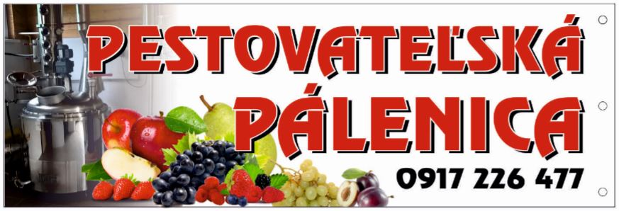

Pálenica Brestov
Cena za vypálenie 1 litra 50% destilátu je 5,10 € vrátane nákladov na energie!!!
Cena pozostáva z:Ceny za službu........................................ 2,40 €
Spotrebnej dane.......................................2,70 € 
------------------------------------------------------------------------
Spolu....................................................5,10 €
Cena za službu zahŕňa:
- Použitie výrobného zariadenia vrátane použitej energie
- Prácu obsluhy zariadenia
- Likvidáciu odpadu
- Režijné náklady prevádzkovateľa
Zákazník - pestovateľ je povinný zaplatiť prevádzkovateľovi pálenice polovicu spotrebnej dane z liehu v sume 5,40 € za liter 100% alkoholu (2,70 € za liter 50% destilátu) do množstva 43,0 litrov l. a. na jedného pestovateľa a jeho domácnosť za jedno výrobné obdobie. Nad uvedený limit zaplatí pestovateľ plnú sadzbu spotrebnej dane t. j. 10,80 € za liter l. a.
Príklad výpočtu ceny:
Pri vypálení 10 litrov 70% destilátu z dodaného kvasu vypočítame, koľko je to litrov 50% destilátu:
10 litrov x 70% / 100 = 7 litrov 100% alkoholu
7 litrov l.a. x 2 = 14 litrov 50% alkoholu
Cena bude: 14 litrov x 5,10 € = 71,4 €
Z toho cena za službu je: 33,6 €